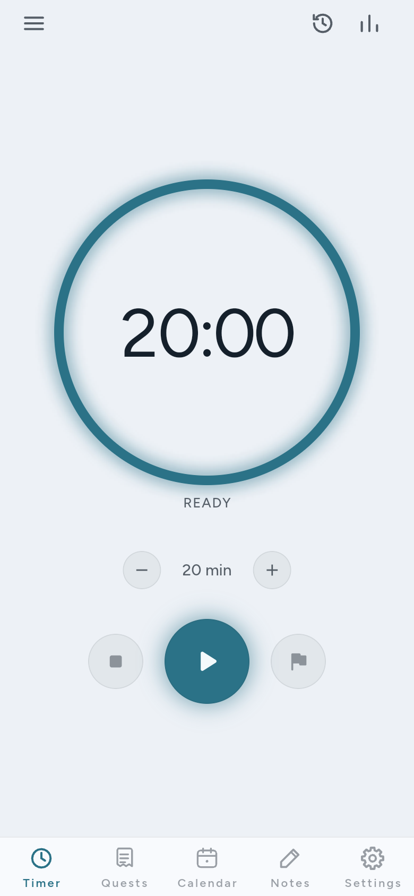
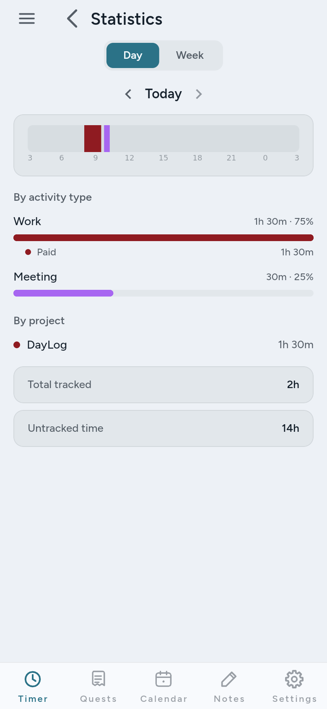
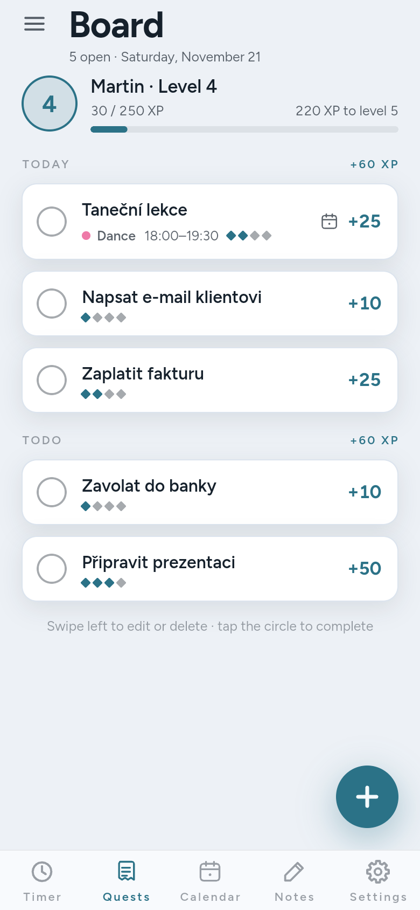

Aplikace je čistá a klidná. Barvy jsou dobře vybrané a tmavé téma je zvládnuté lépe než u většiny aplikací. Je ale znát, že vznikla spojením dvou aplikací. Každá obrazovka má trochu jinou hlavičku, jiné karty a jiný způsob, jak ukazuje to hlavní. Chybí jednotný řád a jasná hierarchie.
Co funguje
- Petrolejově modrá na studeně šedém pozadí. Je klidná, nekřičí a dobře se čte.
- Tmavé téma není čistě černé, má modrý nádech a správně ztlumené povrchy.
- Figtree je dobrá volba písma. Čísla v časovači a XP mají charakter.
- Dotykové plochy jsou velké a primární akce jsou jasné (play, +).
- Nástěnka questů je přehledná a odměna (+25) je vidět hned.
- Tři různé hlavičky. Časovač nemá titulek, Nástěnka, Kalendář a Nastavení mají obří 48px titulek, Statistiky mají hamburger i šipku zpět zároveň.
- Spodní lišta. Popisky jsou roztažené proložením (T i m e r) a hůř se čtou. Neaktivní ikony mají nízký kontrast a aktivní záložku poznáš jen podle barvy.
- Nejednotné povrchy. Řádek, který otevírá podstránku, je jednou bílá karta se stínem a jindy modrý text bez karty. Souhrnná čísla ve Statistikách vypadají jako textová pole.
- Prázdné místo. Časovač i Statistiky nechávají spodní třetinu obrazovky prázdnou a obsah není vyvážený.
- Záře ve světlém tématu. Měkký modrý stín kolem kruhu a tlačítek působí rozmazaně. V tmavém tématu funguje.
- Překryvy. Plovoucí + v kalendáři zakrývá události z 5. 12. a obsah Nastavení při scrollu podjíždí pod titulek, který nemá pozadí.
- Hustota. Hodně prvků je v samostatné kartě nebo sekci, a tak se dlouho scrolluje a málo vidí.
Co znamenají tři úrovně · platí pro všech pět obrazovek
| Úroveň | Co se mění | Zásah do kódu |
|---|---|---|
| Malá | Opravy a doladění: kontrast, velikosti, rozestupy, jednotné karty, bez záře, oprava překryvů. Rozložení obrazovek zůstává. | Hlavně tokeny v lib/theme/ a styly existujících widgetů. Nízké riziko, změní se goldeny. |
| Střední | Totéž plus nové uspořádání: souhrn nahoře, seskupené seznamy, jednotná hlavička a lišta s indikátorem, popisky u tlačítek. | Pár nových sdílených komponent v ui_kit/ (hlavička, seskupený seznam, dlaždice čísla, lišta). Přestavba layoutu pěti obrazovek. |
| Velká | Výraznější vizuální identita: modré hero plochy, nové grafy (oblouk, donut), náhledy témat, bohatší karty. | Nové komponenty a víc vlastního kreslení (CustomPainter). Nejvíc práce, ale aplikace bude působit nejvíc jako hotový produkt. |
Časovač
Hlavní obrazovka aplikace. Čas a hlavní tlačítko musí být čitelné i při rychlém pohledu a vedlejší akce musí být srozumitelné bez hádání.
Co mi vadí teď
- Kruh nic neříká: v klidu je plný a při běhu skoro plný. Chybí stopa, proti které by bylo ubývání vidět.
- Stav „PŘIPRAVENO“ je pod kruhem, daleko od času, ke kterému patří.
- Stop a vlajka nemají popisky. Že vlajka znamená „Dokončit hned“, nikdo neuhodne. V klidu jsou šedé, ale nevypadají jasně neaktivní.
- Nastavení délky (− 20 min +) je malé a vizuálně odtržené od zbytku.
- Spodní pětina obrazovky je prázdná a měkká záře ve světlém tématu působí rozmazaně.


- Kruh dostává tenkou šedou stopu. Ubývání času je tak vidět od první vteřiny.
- Stav se přesouvá do kruhu pod čas jako malý štítek.
- Vedlejší tlačítka mají krátký popisek („Zapsat“, „Dokončit“) a v klidu jsou zřetelně ztlumená.
- Délka je jeden ovládací prvek ve tvaru tabletky, ne dva osamocené kroužky.
- Bez záře, jen jemný stín pod play. Popisky v liště bez proložení.
- Jednotná hlavička jako na ostatních obrazovkách: menu, titulek a tónovaná tlačítka vpravo.
- Všechno o čase je uvnitř kruhu: stav nahoře, čas uprostřed, délka dole. Jeden pohled, jedno místo.
- Jezdec na konci oblouku ukazuje, kde čas právě je.
- Ovládání sedí v plovoucím doku dole u palce a vyplňuje prázdné místo.
- Lišta s indikátorem (tabletka za ikonou), aktivní záložka je jasná i bez barvy.
- Horní polovina je modrá hero plocha, takže časovač má vlastní tvář a je to nejvýraznější místo v aplikaci.
- Oblouk 270° místo kruhu, otevřený dole pro ovládání délky. Čte se jako budík.
- Akce jsou tlačítka s celým textem („Spustit“, „Zastavit a zapsat“, „Dokončit hned“), takže nikdo nemusí hádat.
- Hlavní tlačítko je široké a dole, jednoduše dosažitelné palcem.
- Při běhu by se modrá plocha mohla jemně měnit podle stavu (pauza = ztlumená).
Statistiky
Odpověď na otázku „kolik a na co jsem dnes/tento týden dal čas“. Hlavní čísla patří nahoru, detail pod ně.
Co mi vadí teď
- Dvojitá navigace: hamburger i šipka zpět vedle sebe.
- Nejdůležitější čísla (celkem 2 h, nesledováno 14 h) jsou až dole a vypadají jako textová pole.
- Časová osa je šedý pruh v šedé kartě s nízkým kontrastem. V týdnu se popisky 3–6–9… opakují sedmkrát.
- Tenké pruhy a podtypy (Placená) splývají s hlavním řádkem.
- Polovina obrazovky zůstává prázdná.


- Na podstránce jen šipka zpět, hamburger zmizí (do menu se jde z hlavní obrazovky).
- Časová osa v bílé kartě se světlejší stopou, takže barevné bloky vyniknou.
- Tlustší pruhy (8 px), podtyp odsazený a menší.
- Souhrn je jedna seskupená karta s řádky, ne dvě „pole“.
- Nadpisy sekcí stejným kapitálkovým stylem jako jinde v aplikaci.
- Hlavní čísla jsou nahoře ve dvou dlaždicích. Na první pohled vidíš, kolik jsi sledoval.
- Přepínač Den/Týden je v hlavičce, takže ušetří celý řádek.
- Pod navigací datum celým jménem dne, ať je jasné, na který den se díváš.
- Pruh podílů nad časovou osou dává rychlou odpověď „na co“, osa pak „kdy“. Osa má mřížku a méně popisků.
- V týdnu by byly hodiny jen jednou dole, ne u každého dne.
- Donut s celkovým časem uprostřed. Podíl aktivit je vidět okamžitě, bez čtení čísel.
- Legenda vedle donutu nahrazuje pruhy. Podtypy by se rozbalily klepnutím na řádek, což už dnes dělá rozpad pod pruhem.
- Časová osa „Průběh dne“ je vyšší a se zaoblenými bloky, aby působila jako graf, ne jako ukazatel načítání.
- Každý blok informací má vlastní kartu: souhrn, průběh, projekty.
- Pozor: u týdne s 8+ aktivitami se donut hůř čte, tam bych nechal pruhy ze střední varianty.
Questy (Nástěnka)
Seznam toho, co je dnes a co čeká. Musí se dobře skenovat a odměna má motivovat, ne překážet.
Co mi vadí teď
- Hlavička je přeplněná: titulek, podtitulek, kroužek úrovně, jméno, XP a pruh, všechno v pěti řádcích bez oddělení.
- Karty mají stín i rámeček a jsou vyšší, než musí být, takže se vejde málo questů.
- Obtížnost (kosočtverce) má nízký kontrast a vedle velkého „+25“ se ztrácí.
- Ikona kalendáře u questu je malá a není jasné, co znamená.
- Nápověda „Tažením doleva…“ je trvale vidět i po stém použití.


Tažením doleva upravíš nebo smažeš · klepnutím na kroužek splníš
- Menší titulek (34 místo 48 px), úroveň a XP v jedné kartě. Hlavička má jasné dvě části.
- Karty bez stínu, jen jemný rámeček, a nižší, takže se vejde víc questů.
- Kosočtverce obtížnosti v kontrastnější barvě, aby šly přečíst.
- Datum questu z kalendáře se ukazuje jako text („18:00–19:30“) místo samotné ikonky.
- Nápověda menší a tišší. FAB se zaobleným čtvercem místo kruhu, ať ladí s kartami.
- Jednotná kompaktní hlavička a úroveň jako tónovaná karta s kruhovým postupem kolem čísla.
- Questy v sekci jsou jedna seskupená karta s oddělovači (jako v Nastavení iOS/Android). Je to klidnější a hustší.
- Sekce mají počet a XP jako štítek, takže na první pohled vidíš, kolik toho je.
- Obtížnost jako čtyři malé dílky (lépe čitelné než kosočtverce), XP jako tabletka vpravo.
- Rozšířené tlačítko „+ Quest“ říká, co přidává. Nápověda by se ukazovala jen u prvních pár questů.
- Modrá hero plocha s profilem, stejná řeč jako u časovače. Úroveň je odměna, tak ať je vidět.
- Každý quest má vpravo „minci“ s XP. Gamifikace je hmatatelnější, ale stále střídmá.
- Quest z kalendáře má barevný štítek s typem a časem, takže je jasné, odkud pochází.
- Obtížnost jako dílky v meta řádku, jméno questu větší a tučnější.
- Animace splnění (dnešní pečeť a XP) by na tento styl dobře navazovala.
Kalendář
Měsíční přehled: kdy co je a co mě čeká dnes. Na telefonu je v buňce místo jen na pár znaků, a s tím musí návrh počítat.
Co mi vadí teď
- Názvy událostí jsou useknuté po 4–6 znacích („Den vzni…“, „Lekce a…“), takže hlavní obsah je nečitelný.
- Barvy štítků jsou syté a mimo paletu aplikace. Svátek je jednou plný červený, jindy světlý s proužkem.
- Dnešek má tlustý rámeček i výplň celé buňky, což je moc těžké.
- Dny z jiného měsíce se liší jen šedým číslem.
- Plovoucí + zakrývá události z 5. 12. a velké buňky jsou z většiny prázdné.


- Dnešek jako vyplněný kroužek kolem čísla (jako v systémových kalendářích), ne těžký rámeček.
- Štítky událostí v tlumených odstínech stejné barvy a s tmavým textem, vše jedním stylem. Čitelnější a v paletě.
- Dny z jiného měsíce mají šedé pozadí, takže hranice měsíce je hned vidět.
- Buňky o kousek nižší, aby plovoucí + nezakrývalo poslední řádek.
- Mřížka jen vodorovné linky, méně „tabulkové“.
19:30
- Kompaktní mřížka (nejvýš 2 štítky, pak „+1“). Pod ní karta s událostmi vybraného dne. Po otevření vidíš dnešek bez dalšího klepnutí.
- Klepnutí na den jen přepne kartu dole místo otevírání sheetu přes celý kalendář. Detail události a přidání zůstávají stejné.
- Měsíc a rok v hlavičce menším písmem, ovládání rozdělené: hledání a filtr nahoře, listování měsíci pod tím.
- Pozor, toto je jediná změna chování v celém návrhu (sheet → karta). Když ji nebudeš chtít, zbytek varianty platí i se sheetem.
- Velký název měsíce jako u kalendářních aplikací typu Fantastical: rok nad ním drobně, listování v jednom kompaktním prvku.
- Mřížka v kartě s barevnými tečkami místo textu: přehled „kde je co“ bez useknutých slov.
- Události dne pod mřížkou jako barevné karty v barvě typu. Kalendář dostane život a typy se dají poznat podle barvy.
- Názvy událostí v mřížce zmizí. Kdo potřebuje vidět názvy v celém měsíci, zůstane u malé varianty.
Nastavení
Málo navštěvovaná obrazovka, ale musí být uspořádaná: najít věc za dvě vteřiny a vidět aktuální hodnotu bez rozklikávání.
Co mi vadí teď
- Duplicitní nadpisy: „PRAVIDELNÉ MISE“ a pod ním karta „Pravidelné mise“, totéž u Zkratky na ploše.
- Každá položka má vlastní kartu a sekci, takže se dlouho scrolluje a nic není seskupené.
- Data a O aplikaci mají jiný styl (bez karet, modrý text) než zbytek.
- Při scrollu podjíždí obsah pod titulek „Nastavení“, který nemá pozadí, takže jsou vidět useknuté segmenty.
- Vybraný segment (English, Světlý) má výrazný rámeček a působí těžce.


- Žádné duplicitní nadpisy: související položky jsou v jedné seskupené kartě s oddělovači.
- Data a O aplikaci mají stejný styl řádků jako zbytek.
- Hodnota je vpravo v řádku („1 aktivní“), popisy se zkracují nebo přesouvají do podstránky.
- Vybraný segment je bílá „vystouplá“ plocha bez rámečku, lehčí a moderní.
- Titulek při scrollu dostane plné pozadí a zmenší se (oprava překryvu).
- Profil nahoře jako karta s iniciálou. Jméno se upravuje tužkou a pole zabírá místo jen při úpravě.
- Jazyk a vzhled jsou řádky s kompaktním přepínačem vpravo. Ušetří dvě celé sekce.
- Každý řádek má ikonu v tónovaném čtverci, takže se dá skenovat očima bez čtení.
- Šest skupin se zredukuje na čtyři logické: Vzhled a jazyk, Plánování, Zařízení a data, O aplikaci.
- Celé nastavení se vejde na zhruba 1,3 obrazovky místo 2.
- Profil v modré hero kartě, stejná řeč jako u nástěnky a časovače. Jméno hrdiny je vidět jako identita, ne jako formulářové pole.
- Vzhled jako tři náhledy (světlý, tmavý, systém), takže vidíš, co volíš. Do budoucna se sem dají přidat další motivy z registru.
- Stav jako štítek („1 aktivní“) v accent barvě, aby bylo jasné, co je zapnuté.
- Zbytek (Zařízení, Data, O aplikaci) pokračuje pod tím ve stejném stylu jako u střední varianty.
Moje doporučení
Jako základ bych vzal střední změnu u všech obrazovek, protože řeší skoro všechny problémy z hodnocení. Z velké bych přidal modré hero plochy u časovače a nástěnky. Jsou to dvě nejpoužívanější obrazovky a hero dá aplikaci tvář, aniž by se musel měnit zbytek.
Na co se tě pak zeptám
- Kterou úroveň u každé obrazovky (můžeš míchat, třeba časovač velká, nastavení střední).
- Kalendář: chceš kartu dne pod mřížkou (střední, velká), nebo zůstat u sheetu?
- Kalendář: názvy událostí v mřížce (malá, střední), nebo jen tečky (velká)?
- Statistiky: donut, nebo pruhy?
Poznámky pro implementaci · pro dalšího agenta
- Barvy: stávající tokeny v
lib/theme/tokens.dartzůstávají (brass#2B7287 / #78B4C4,board,boardRaised,parchment). Přibydou:tone(neutrální tónovaná plocha 5–6 %),lineStrong(stopa kruhu, prázdné dílky, 13–14 %) a pro velkou variantuheroGradient(světlé #307E94 → #1D5466, tmavé #21505F → #14303A) sonHero. - Záře: odstranit glow kolem kruhu a tlačítek ve světlém tématu, nahradit krátkým stínem pod primárním tlačítkem.
- Spodní lišta: zrušit proložení písmen v popiscích, neaktivní ikony na ~58 % textu, ve střední a velké variantě indikátor ve tvaru tabletky za aktivní ikonou.
- Sdílené komponenty (střední a velká varianta, do
ui_kit/): jednotná hlavička (menu nebo zpět + titulek 22 px + akce), seskupený seznam s řádky (ikona, titulek, hodnota, šipka), segmentový přepínač s „vystouplou“ volbou, dlaždice s číslem. - Kalendář: barvy typů zůstávají (
eventColor), štítek = barva typu na 26 % přes pozadí + text smíchaný 40 % s barvou textu. Dnešek = vyplněný kroužek čísla. - Nové texty (ARB cs/en): krátké popisky „Zapsat“ / „Dokončit“ pod tlačítky časovače, „Sledováno“ / „Nesledováno“ pro dlaždice, názvy skupin nastavení („Plánování a připomínky“, „Vzhled a jazyk“, „Zařízení a data“), „Quest“ / „Událost“ pro rozšířené FAB.
- Funkce se nemění. Jediná změna chování je volitelná karta dne v kalendáři místo sheetu (střední a velká varianta).
- Goldeny v
test/goldensse změní u všech dotčených obrazovek a pravidla „bez literálních barev a rozestupů“ platí i pro nové komponenty.